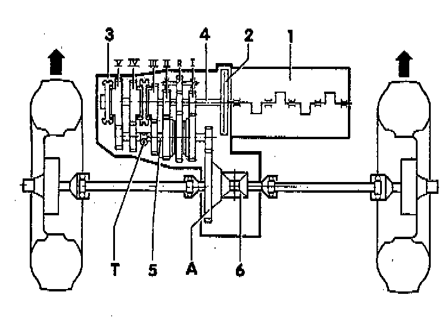

Transmission and Drivetrain: Description and Operation

LEGEND
1 - Engine
2 - Clutch
3 - Transmission
4 - Input shaft
5 - Output shaft
6 - Differential
I - 1st gear
II - 2nd gear
III - 3rd gear
IV - 4th gear
V - 5th gear
R - Reverse gear
A - Final drive
T - Speedometer drive
NOTE: Arrows point toward front of vehicle.